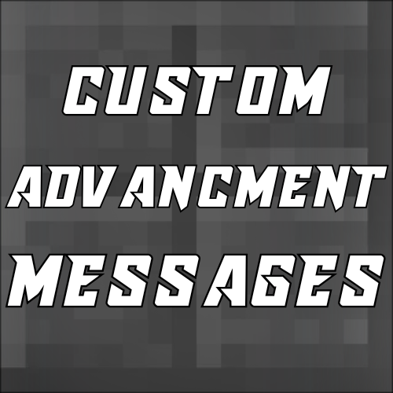

AFXPlugins Network

AFXPlugins
Documentation for the AFXPlugins collection of Minecraft plugins. Pick a plugin below to get started.
Plugins
CustomPlayerNametags
Nametag customization
Fully customize player nametags with global and per-player formats, PlaceholderAPI support, and Bedrock/Geyser compatibility.
View documentation

CustomAdvancementMessages
Advancement message customization
Rewrite advancement broadcast messages with custom player names, phrases, and colors for Task, Goal, and Challenge advancements.
View documentation
About AFXPlugins
I own a small Minecraft server for me and my friends and I make plugins to improve the gameplay experience. I created AFXPlugins in order to share these creations with others so they too can benefit from them.